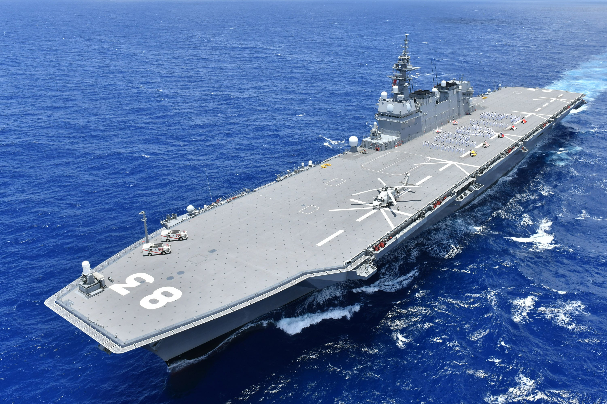
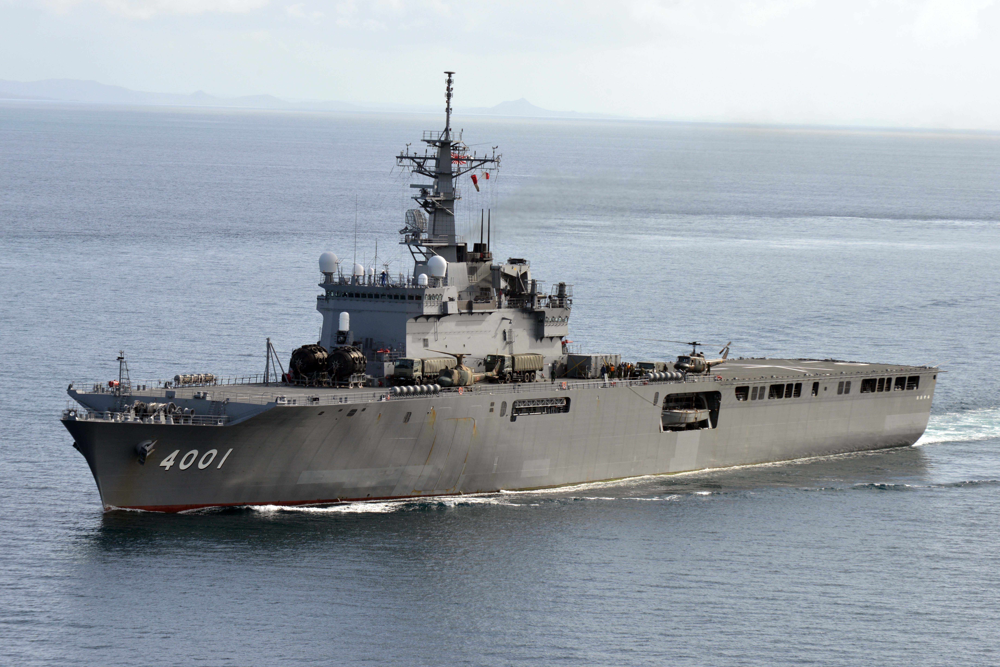
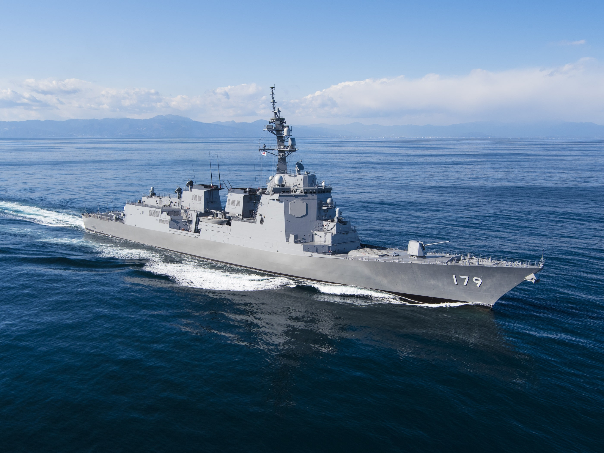
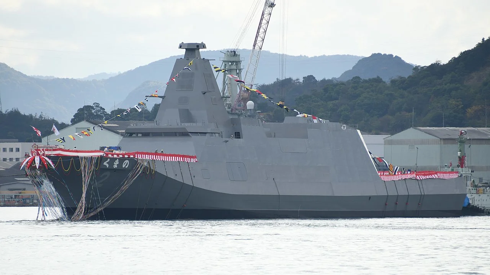
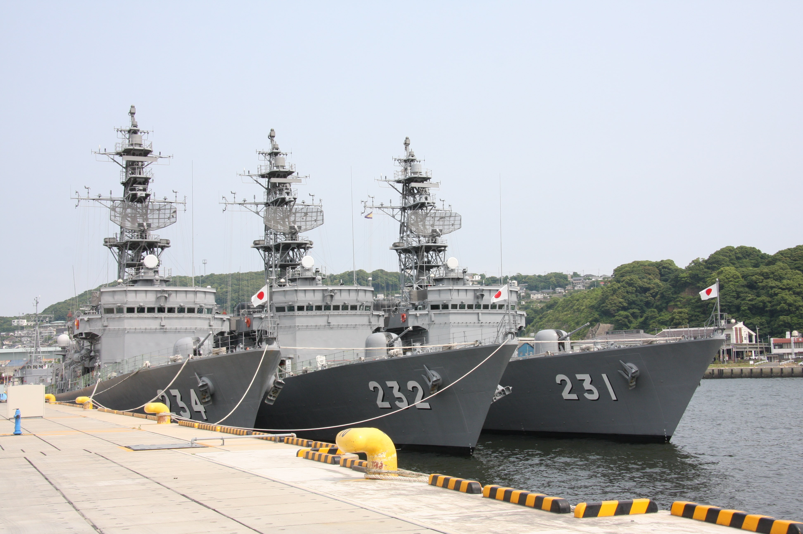
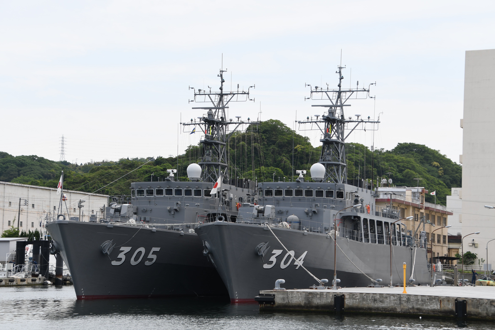

Japan Maritime Self-Defense Force
Info
- There are 50,800 military personnel, 150+ warships
- Founded on July 1, 1954
- The commander is Prime Minister Fumio Kishida
- Headquarters in Tokyo
- March - Gunkan kōshinkyoku
- Wars
- Russian-Japanese war
- World War I
- The incident occurred on January 28
- The Japanese-Chinese war
- Second World War
Ships
- Helicopter destroyers
- Клас Izumo - 2 ships
- Клас Hyūga - 2 ships
- Landing ships
- Клас Ōsumi - 3 ships
- Клас LCU - 9 ships
- Destroyers(36 ships)
- Клас Maya
- Клас Atago
- Клас Kongō
- Клас Asahi
- Клас Akizuki
- Клас Takanami
- Клас Murasame
- Клас Asagiri
- Frigates
- Клас Mogami - 2 ships
- Escort destroyers
- Клас Abukuma - 6 ships
- Minesweepers(22 ships)
- Клас Uraga
- Клас Awaji
- Клас Enoshima
- Клас Hirashima
- Клас Sugashima

Class Izumo

Class Ōsumi

Class Maya

Class Mogami

Class Abukuma

Class Awaji